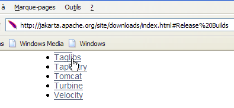
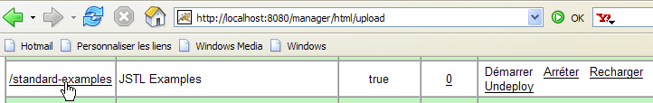
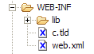

8. De tagbibliotheek JSTL
8.0.1. Inleiding
Laten we eens kijken naar de weergave [erreurs.jsp], die een lijst met fouten weergeeft:

Er zijn verschillende manieren om zo’n pagina te schrijven. We richten ons hier alleen op het weergeven van de fouten. Een eerste oplossing is het gebruik van Java-code, zoals hier is gedaan:
<%@ page language="java" contentType="text/html; charset=ISO-8859-1"
pageEncoding="ISO-8859-1"%>
<!DOCTYPE HTML PUBLIC "-//W3C//DTD HTML 4.01 Transitional//EN">
<%@ page import="java.util.ArrayList" %>
<%
// de gegevens uit het model ophalen
ArrayList erreurs=(ArrayList)request.getAttribute("erreurs");
String lienRetourFormulaire=(String)request.getAttribute("lienRetourFormulaire");
%>
<html>
<head>
<title>Personne</title>
</head>
<body>
<h2>Les erreurs suivantes se sont produites</h2>
<ul>
<%
for(int i=0;i<erreurs.size();i++){
out.println("<li>" + (String) erreurs.get(i) + "</li>\n");
}//for
%>
</ul>
<br>
<form name="frmPersonne" method="post">
<input type="hidden" name="action" value="retourFormulaire">
</form>
<a href="javascript:document.frmPersonne.submit();">
<%= lienRetourFormulaire %>
</a>
</body>
</html>
De pagina JSP haalt de lijst met fouten op uit de aanvraag (regel 8) en geeft deze weer met behulp van een Java-lus (regels 19-23). De pagina combineert HTML-code met Java-code, wat problematisch kan zijn als de pagina moet worden onderhouden door een grafisch ontwerper die de Java-code doorgaans niet zal begrijpen. Om deze combinatie te vermijden, worden tagbibliotheken gebruikt die nieuwe mogelijkheden bieden voor de JSP-pagina's. Met de tagbibliotheek JSTL (Java Standard Tag Library) ziet de vorige weergave er als volgt uit:
<%@ page language="java" contentType="text/html; charset=ISO-8859-1"
pageEncoding="ISO-8859-1"%>
<!DOCTYPE HTML PUBLIC "-//W3C//DTD HTML 4.01 Transitional//EN">
<%@ taglib uri="/WEB-INF/c.tld" prefix="c" %>
<html>
<head>
<title>Personne</title>
</head>
<body>
<h2>Les erreurs suivantes se sont produites</h2>
<ul>
<c:forEach var="erreur" items="${erreurs}">
<li>${erreur}</li>
</c:forEach>
</ul>
<br>
<form name="frmPersonne" method="post">
<input type="hidden" name="action" value="retourFormulaire">
</form>
<a href="javascript:document.frmPersonne.submit();">
${lienRetourFormulaire}
</a>
</body>
</html>
De tag (regel 4)
geeft aan dat er gebruik wordt gemaakt van een tagbibliotheek waarvan de definitie in het bestand [/WEB-INF/c.tld] staat. Deze tags worden in de paginacode gebruikt, voorafgegaan door het woord c (prefix="c"). U kunt elk gewenst voorvoegsel gebruiken. Hier staat c voor [core]. Dankzij de voorvoegsels kunnen tagbibliotheken worden gebruikt die voor bepaalde tags dezelfde namen zouden kunnen hebben. Het gebruik van het voorvoegsel neemt de dubbelzinnigheid weg. De nieuwe pagina bevat geen Java-code meer op de twee plaatsen waar deze voorheen wel stond:
- het ophalen van het sjabloon van de pagina [erreurs, lienRetourFormulaire] (gedeelte verwijderd)
- de weergave van de foutenlijst (regels 13-15)
De lus voor het weergeven van fouten is vervangen door de volgende code:
<c:forEach var="erreur" items="${erreurs}">
<li>${erreur}</li>
</c:forEach>
- de tag <forEach> wordt gebruikt om een lus af te bakenen
- De notatie ${variabele} wordt gebruikt om de waarde van een variabele weer te geven
De tag <forEach> heeft hier twee attributen:
- items="${fouten}" geeft de verzameling objecten aan waarover moet worden doorlopen. Hier is de verzameling het object fouten. Waar is dit te vinden? De pagina JSP zoekt achtereenvolgens en in deze volgorde naar een attribuut met de naam "fouten" in:
- het object [request], dat het door de controller verzonden verzoek vertegenwoordigt: request.getAttribute("erreurs")
- het object [session] dat de sessie van de klant vertegenwoordigt: session.getAttribute("fouten")
- het object [application], dat de context van de webapplicatie vertegenwoordigt: application.getAttribute("fouten")
De verzameling die door het attribuut **items wordt aangeduid, kan verschillende vormen aannemen: tableau, ArrayList, een object dat de interface List implementeert, ...
- var="fout" wordt gebruikt om het huidige element van de collectie die wordt verwerkt een naam te geven. De lus <forEach> wordt achtereenvolgens uitgevoerd voor elk element van de collectie items. Binnen de lus wordt het element van de collectie dat op dat moment wordt verwerkt hier dus aangeduid met fout.
De notatie ${erreur} voegt de waarde van de variabele „erreur” in de tekst in. Deze variabele hoeft niet per se een tekenreeks te zijn. JSTL gebruikt de methode erreur.toString() om de waarde van de variabele „erreur” in te voegen. In plaats van de notatie ${fout} kan ook de tag <c:out value="${fout}"/> worden gebruikt.
Terugkomend op ons voorbeeld van het weergeven van fouten:
- de controller zal in de aanvraag die naar de pagina JSP wordt verzonden een ArrayList met foutmeldingen opnemen, dus een ArrayList met String-objecten: request.setAttribute("fouten", fouten) waarbij fouten het ArrayList is;
- vanwege het attribuut items="${fouten}" zoekt de pagina JSP naar een attribuut met de naam fouten, achtereenvolgens in de query, de sessie en de applicatie. Ze vindt het in de verzoek-string: request.getAttribute("fouten") levert de ArrayList op die door de controller in de verzoek-string is geplaatst;
- de variabele erreur van het attribuut var="fout" verwijst dus naar het huidige element van ArrayList, dus een object String. De methode erreur.toString() voegt de waarde van dit String, in dit geval een foutmelding, in de HTML-stroom van de pagina in.
De objecten in de verzameling die door de tag <forEach> wordt verwerkt, kunnen complexer zijn dan eenvoudige tekenreeksen. Laten we het voorbeeld nemen van een pagina JSP die een lijst met artikelen weergeeft:
waarbij [listarticles] een ArrayList is van objecten van het type [Article], waarvan we aannemen dat het een Javabean is met de velden [id, nom, prix, stockActuel, stockMinimum], waarbij elk van deze velden vergezeld gaat van zijn eigen get- en set-methoden. Het object [listarticles] is door de controller in de verzoek-URL geplaatst. De vorige pagina JSP haalt het op uit het attribuut items van de tag forEach. Het huidige object ‘article’ (var="article") verwijst dus naar een object van het type [Article]. Laten we eens kijken naar de tag op regel 3:
Wat betekent ${article.nom}? Eigenlijk verschillende dingen, afhankelijk van de aard van het artikelobject. Om de waarde van article.nom te verkrijgen, zal de pagina JSP twee dingen proberen:
- article.getNom() – let op de spelling getNom om het veld ‘naam’ op te halen (JavaBean-standaard)
- article.get("naam")
Het object [article] kan dus een bean zijn met een veld ‘naam’, of een woordenboek met een sleutel ‘naam’.
Er zijn geen beperkingen aan de hiërarchie van het verwerkte object. Zo is de tag
maakt het mogelijk om een object [individu] van het volgende type te verwerken:
class Individu{
private String nom;
private String prénom;
private Individu[] enfants;
// methoden van de JavaBean-standaard
public String getNom(){ return nom;}
public String getPrénom(){ return prénom;}
public Individu getEnfants(int i){ return enfants[i];}
}
Om de waarde van ${individu.enfants[1].nom} te verkrijgen, zal de pagina JSP verschillende methoden proberen, waaronder deze, die zal slagen:
individu.getEnfants(1).getNom(), waarbij individu verwijst naar een object van het type Individu.
8.0.2. De bibliotheek JSTL installeren en verkennen
De eerder gegeven uitleg volstaat voor de toepassing die ons interesseert, maar de tagbibliotheek JSTL biedt nog andere tags dan de hier gepresenteerde. Om deze te ontdekken, kunt u een tutorial installeren die in het bibliotheekpakket is meegeleverd.
We zullen de implementatie JSTL 1.1 van het project [Jakarta Taglibs] gebruiken, beschikbaar via de URL [http://jakarta.apache.org/taglibs/] (mei 2006):
 |  |
 |  |
 |  |
De inhoud van het gedownloade zip-bestand ziet er ongeveer als volgt uit:

De twee bestanden met de extensie .war zijn archieven van webapplicaties:
- standard-doc: documentatie over de tags JSTL
- standard-examples: voorbeelden van het gebruik van de tags
We gaan deze laatste applicatie in Tomcat implementeren. We starten Tomcat via de juiste optie in het menu [Démarrer], voeren vervolgens de URL [http://localhost:8080] in en volgen de link [Tomcat Manager]:

We krijgen dan een authenticatiepagina te zien. We loggen in als manager / manager of admin / admin, zoals beschreven in paragraaf 2.3.3.

We krijgen een pagina te zien met een overzicht van de applicaties die momenteel in Tomcat zijn geïmplementeerd:

We kunnen een nieuwe applicatie toevoegen via de formulieren onderaan de pagina:

We gebruiken de knop [Parcourir] om een .war-bestand aan te wijzen dat moet worden geïmplementeerd.

Op de schermafbeelding is het niet te zien, maar we hebben het bestand [standard-examples.war] geselecteerd uit de gedownloade distributie JSTL. Met de knop [Deploy] wordt deze applicatie opgeslagen en geïmplementeerd in Tomcat.

De applicatie [/standard-examples] is succesvol geïmplementeerd. We starten deze op:

De lezer wordt uitgenodigd om de verschillende links op deze pagina te volgen wanneer hij op zoek is naar voorbeelden van het gebruik van de JSTL-tags.
De applicatie [standard-doc] kan op dezelfde manier worden geïmplementeerd vanuit het bestand [standard-doc.war]. Deze biedt toegang tot vrij technische informatie over de bibliotheek JSTL. Voor beginners is deze minder interessant.
8.0.3. JSTL gebruiken in een webapplicatie
In de voorbeelden die bij de bibliotheek JSTL 1.2 worden meegeleverd, bevatten de JSP-pagina’s aan het begin van het bestand de volgende tag:
We zijn deze tag al tegengekomen in paragraaf 8.1.1, en we hebben er een korte uitleg bij gegeven:
- [uri]: URI (Uniform Resource Identifier), waarin de definitie staat van de tags die op de pagina worden gebruikt. Deze URI wordt door de webserver gebruikt wanneer de pagina JSP wordt omgezet in Java-code om een servlet te worden. Hij wordt ook gebruikt door ontwikkeltools voor webpagina's om de juiste syntaxis van de op de pagina gebruikte tags te controleren of om hulp bij het typen te bieden. Wanneer men begint met het typen van een tag, kan een tool die de bibliotheek kent de gebruiker vervolgens de mogelijke attributen voor die tag voorstellen.
- [prefix]: voorvoegsel waarmee deze tags op de pagina worden geïdentificeerd
De URI [http://java.sun.com/jsp/jstl/core] kan niet worden gebruikt als men geen verbinding heeft met het openbare internet. In dat geval kan het bestand met de tagdefinities lokaal worden opgeslagen. Er worden meerdere van dergelijke bestanden meegeleverd met de distributie JSTL 1.2 in de map [tld] (Tag Language Definition):

JSTL is in feite een verzameling tagbibliotheken. We zullen alleen de bibliotheek [c.tld] gebruiken, ook wel de "core"-bibliotheek genoemd. We plaatsen het bovenstaande bestand [c.tld] in de map [WEB-INF] van onze applicaties:

en voegen we de volgende tag toe aan onze pagina’s JSP om het gebruik van de ‘core’-bibliotheek aan te geven:
Hoewel we door het gebruik van tagbibliotheken kunnen voorkomen dat we Java-code in de JSP-pagina’s hoeven op te nemen, worden deze tags natuurlijk wel omgezet in Java-code tijdens de vertaling van de JSP-pagina naar een Java-servlet. Ze maken gebruik van klassen die zijn gedefinieerd in twee archieven [jstl.jar, standard.jar] die te vinden zijn in de map [lib] van de distributie JSTL:

Deze twee archieven bevinden zich in de map [WEB-INF/lib] van onze applicaties:

We hebben nu de basis om de volgende versie van onze voorbeeldtoepassing aan te pakken.